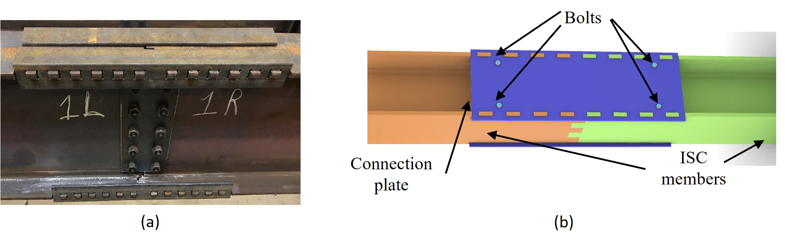
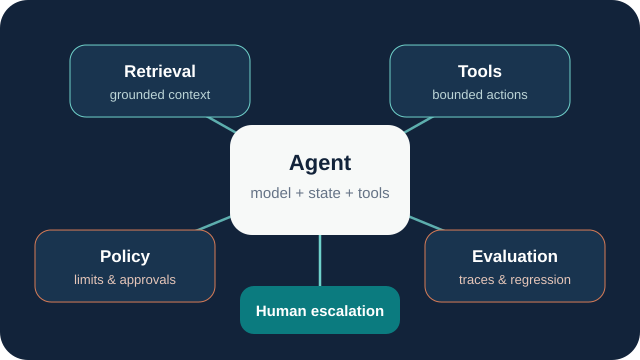

Research
Research
My research centres on machine learning for visual perception and interaction. Current work extends this into robotic structural assembly, while my applied research examines evaluation, observability and assurance for LLM and agentic systems.
Human-machine interaction
My PhD research studied visual cues that can support intention inference in collaborative assembly. Early work combined gaze, hand motion and object interaction, using temporal models to infer what a person was likely to do next.
SLYKLatent
SLYKLatent moved the gaze-estimation strand towards non-invasive visual inference. The method uses self-supervised facial representation learning followed by downstream fine-tuning with full-face and eye-region inputs.
QUB-PHEO
QUB-PHEO provides multi-view visual data for studying dyadic interaction in collaborative assembly. It covers 70 participants and 36 subtasks, with visual cues including gaze, hands, objects and facial information. A later benchmark established reproducible baselines for short-horizon dyadic motion prediction on the dataset.
ARISE: robotic structural assembly
ARISE — Assembly and Robotics Innovation in Steel Building Erection — is a US-Ireland collaboration involving Queen's University Belfast, New York University, the University of Galway and the University of Texas at San Antonio, supported through linked DfE, NSF and Research Ireland awards.
As Research Fellow on the Queen's team, I lead machine-learning and computer-vision research for robotic structural assembly. A 2025 ISARC paper set out the assembly strategy and experimental platform. ConPose addresses RGB detection and pose estimation for ISC components, while ISC-Perception contributes hybrid real, photorealistic and synthetic data for perception research.

Robotic assembly strategy ↗ · ConPose ↗ · ISC-Perception ↗ · Buildings cover ↗
Reliable LLM and agentic systems
My industry work has extended the reliability question into tool-using LLM systems. I work on evaluation sets, regression testing, trace-level observability, policy boundaries and escalation for agentic workflows. The aim is to make system behaviour inspectable and testable once a model is connected to tools and operational processes.

Methods
My work uses deep learning and statistical machine learning, temporal and multimodal modelling, computer vision, geometric inference, simulation and reinforcement learning. Evaluation is a recurring part of the work: calibration and robustness for learned models, synthetic-to-real validation in perception, and regression and trace analysis for deployed AI systems.